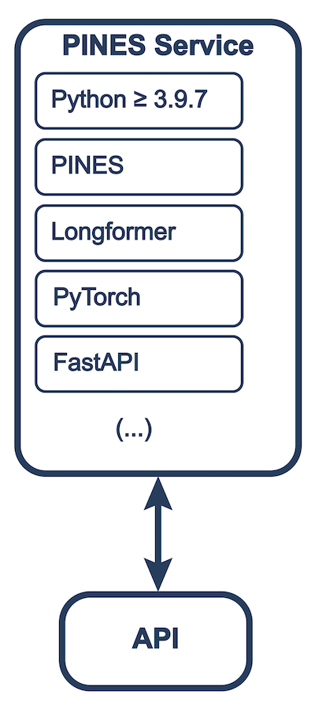

PINES User Manual
PINES is provided as-is with no guarantee whatsoever and users agree to be held responsible for compliance with their local government/institutional regulations. All PINES installations should be reviewed with institutional information security authorities.
PINES provide a simple inference API to interact with large language models to detect clinical events in free text. The software is designed to be used in a clinical research setting, where the user has access to a large dataset of clinical notes and wants to detect the presence of a specific event.
Software Installation
The software can be installed locally or run can be run as a Docker container.
Detailed Requirements
Local Installation
- Python 3.9 or later
- poetry
To install poetry, run
pipx install poetryor follow the instructions.
Once poetry is installed, you can install the package locally by running the following commands:
git clone https://github.com/CEDARS-NLP/PINES.git
cd PINES
poetry install # this will install all required packages
poetry run python pines.py # this will run the package
Docker Installation
-
Docker
Verify
docker -vworks on your system.
If it does not, please follow the Docker installation instructions.
Once Docker is installed, you can install the package as a Docker container by running the following commands:
git clone https://github.com/CEDARS-NLP/PINES.git
docker build -t pines-api .
docker run -dp 127.0.0.1:8036:8036 pines-api
System Architecture

Standalone PINES Installation
Standalone PINES installation is a preferred method for users who want to apply the software on their notes without the need to deploy a full CEDARS stack. The standalone installation is also useful for users who want to use PINES as a standalone tool for their research or clinical work.
Installing PINES in CEDARS Docker Deployment
PINES is available as a Docker container and can be deployed as part of the CEDARS stack. This is the preferred method for users who want to use PINES as part of the CEDARS stack.
Operation
In all deployment methods, PINES is available as a service on port 8036. The service can be accessed using a RESTful API. The API is documented in the API Reference.
Function Reference
Label a single text
| Returns: |
|
|---|
Source code in pines.py
56 57 58 59 60 61 62 63 64 65 66 | |
Label a batch of texts
| Parameters: |
|
|---|
| Returns: |
|
|---|
Source code in pines.py
69 70 71 72 73 74 75 76 77 78 79 80 81 | |